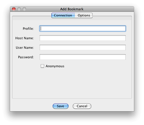
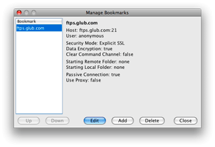

Bookmarks
As you make connections, you may want to bookmark them so you can
quickly return to them.
Adding Bookmarks

There are three ways to add bookmarks for your favorite FTP sites.
- Add from the Open Connection dialog.
- Add from the Add
Bookmark menu item under the Bookmarks menu.
- Add from the Manage Bookmarks menu item under the Bookmarks
menu.
If you know that you will want to save a bookmark upon logging in, the
easiest option is to select the Save to Bookmarks option on the
Open Connection dialog. After you connect, a bookmark will be saved for
that site. By default the profile name will be the same as the hostname.
You can change that later by editing the bookmark's properties in the Manage Bookmarks dialog.
If you have already logged in or you wish to add a bookmark without
logging in, you may do so from the Bookmarks menu by selecting the
Add Bookmark menu item. Here you will be allowed to save all of
the pertinent information.
Managing Bookmarks

Once a bookmark has been saved, you have the option to edit the stored
information from the Manage Bookmark dialog. You can get to this dialog
by going under the Bookmarks menu and selecting the Manage
Bookmarks menu item. Here you will have the option to organize the
bookmark's placement in the menu, edit attributes of the bookmark, add a
new bookmark, or delete it altogether.
Global Bookmarks
There is one type of bookmark that you will be able to use but not edit.
They are called global bookmarks. These global bookmarks are no
different than your own local copy, but they are retrieved via an HTTP
URL that can be set in preferences. The URL should point to a valid
Secure FTP 2.5 bookmark XML file.